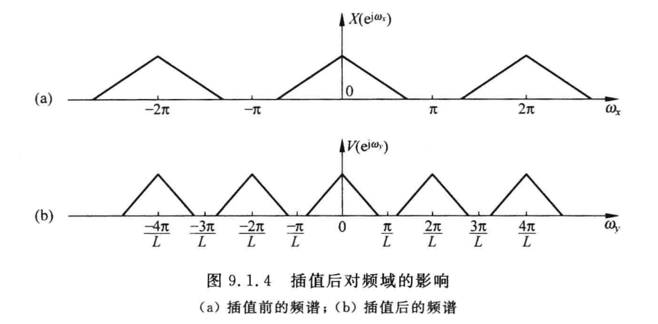

引子
Why would we want to change the sample rate in a filter? There are two reasons. The first is performance. The second is cost. Multirate systems often perform a processing task with improved performance characteristics while simultaneously offering that performance at significantly lower cost than traditional approaches.
在通信系统中，上采样和下采样可能是最基础和最常见的一种操作，一般来讲基带的各种处理和实现都是期望在低速率下进行，以降低硬件实现的功耗和开销。而传递给射频部分后，则期望信号的采样速率在一个相对较高的速率下进行，以获得较好的射频性能。前段时间在工作中接触了一些关于采样率变换的内容，在此打算记录一下自己的思考和一些经验。本文主要记录以下几个方面的内容：
- 上采样&下采样的原理及数学描述，包含时、频域的分析
- 上采样后镜像抑制滤波器以及下采样后抗混叠滤波器的设计
上采样
数学描述
上采样（插值）常常被看作是下采样的逆运算，但是实际上并不是，上采样插入0的操作并没有改变信号的能量，也没有使得信号的信息缺失。插值的方式也有很多，这里以最简单的插值方式——在信号之间插入零为例来分析。
时域
若原始信号为x(n)，进行I倍插值后，信号变为：
xL(n)={x(Ln)0if n=0,L,2L…otherso
其归一化频率的变化为：
ωy=Lfs2πf=Lω
频域
其频域表示可以通过下式求得
XL(ejωy)=n=−∞∑∞x(Ln)exp(−jnωy)=X(ejωyL)=X(ejω)
因为ω的周期为2π，所以ωy的周期为2π/L，在周期内频谱与原来相同！，但是相当于做了压缩。

从另一个角度来讲：因为插值，原本为fs的采样率变成了Lfs，相当于在当前的采样率下，能“看”到更多周期延拓后的数字信号。
滤波器设计
在上采样操作之后，往往需要通过一个低通滤波器，原因也很容易想到：上采样后在可见的频域范围内能看到更多的原频谱周期延拓后的分量，而这些分量或者说镜像信号并不是我们想要的，因此需要通过滤波器去滤掉它们，即：
H(ejω)={10if ∣ω∣<Lπothers
不过实际上如果仅考虑需要对镜像进行抑制的情况，此滤波器也许仅需要在镜像生成的地方进行抑制，若信号带宽为B，则：
H(ejω)={10others if ∣ω−kLπ∣<2B
下采样
数学描述
时域
若对信号进行D倍抽取，采样率变为原来的D1， 即fs→Dfs，若原本信号为x(n)，抽取后信号可以表示为：
xD(n)=x(nD)
频域
对其求频谱：
XD(ejω)=n=−∞∑∞xD(n)exp(−jωn)=n=−∞∑∞x(nD)exp(−jDωnD)=x(0)exp(−jDω0)+x(1)×0×exp(−jDω1)+x(D)exp(−jDωD)+⋯+x(nD)exp(−jDωnD)
上式左半部分可以看做按照fs/D的采样率下做的频谱分析，相当于只有N/D点，而右边我们可以看做变回fs的采样率，只不过部分点的值是0，可以看出归一化的频率应该发生了变化，因为：
ωD=fs/D2πf=Dfs2πf=Dω
DωD=ω
要想和原来的x(n)建立联系，构造出一个N点的函数，仅在nD倍处有值，其余值为零，很容易想到可以利用类似脉冲抽样序列的函数来实现：
x1(n)=x(n)p(n)=x(n)i=−∞∑∞δ(n−Di)
对p(n)求傅里叶级数展开，可以得到：
p(n)=D1k=0∑D−1exp(jD2πnk)
因此可以得到
XD(ejω)=n=−∞∑∞x1(n)exp(−jDωn)=X1(ejω/D)(1.1)
而X1(ejω)可以求得：
X1(ejω)=D1k=0∑D−1X(ej(ω−2πk/D))(1.2)
因此将(1.2)带入(1.1)可以求出
XD(ejω)=D1k=0∑D−1X(ej(ω−2πk)/D)
可以看出，抽取后的信号的频谱是原来序列的频谱经过频移和D倍的展宽后的叠加和。
滤波器设计
在下采样之前往往需要一个抗混叠滤波器，来防止抽取导致的“变宽”的频谱泄露进原来的通带之内：
H(ejω)={10if ∣ω∣<Dπothers